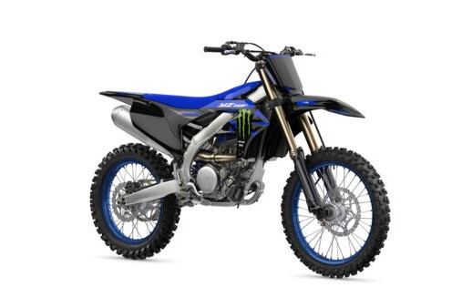

Yamaha YZ250F
The Yamaha YZ250F is one of the most dominant bikes in the 250cc motocross class. Known for its class-leading power, advanced chassis, and wireless tuning capability, the YZ250F is a true competition machine — engineered to deliver podium performance straight from the crate.
Specifications
- Engine displacement: 250 cc
- Engine type: 4-stroke, liquid-cooled, single-cylinder DOHC
- Fuel system: Electronic fuel injection
- Transmission: 5-speed
- Tuning: Yamaha Power Tuner app (via Wi-Fi)
Chassis & Suspension
- Frame: Aluminum bilateral beam frame
- Front suspension: KYB 48 mm USD fork, fully adjustable
- Rear suspension: KYB monoshock, fully adjustable
- Front brake: 270 mm disc
- Rear brake: 240 mm disc
Dimensions & Weight
- Seat height: 970 mm
- Wet weight: approx. 106 kg
- Fuel tank capacity: 6.2 liters
Key Features
- Race-proven 250cc DOHC 4-stroke engine
- Yamaha Power Tuner app for wireless mapping
- Exceptional mid-range power and throttle response
- Lightweight aluminum frame for precision handling
- Factory-style graphics and slim ergonomic bodywork
Price: CHF 10,290.–
← Back to overview